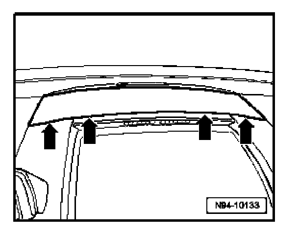
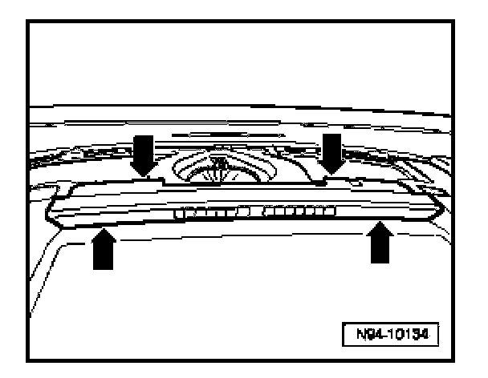
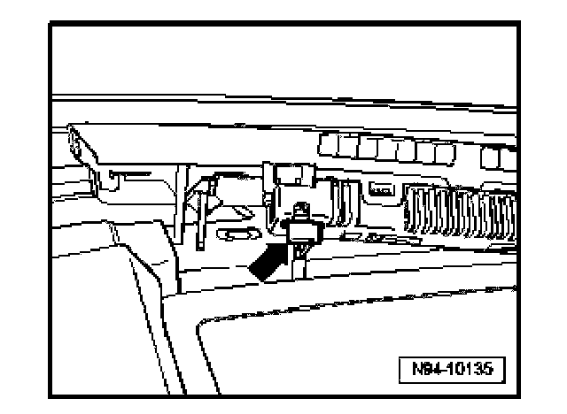

Left Front Parking Aid Display -Y13-, Removing and Installing
Left Front Parking Aid Display -Y13-, Removing And Installing
The front parking aid display is located above the storage compartment in center of instrument panel.
CAUTION: When removing switches, trim, covers or displays, prevent damage to visible areas of the instrument panel by always applying appropriate tape to area surrounding the component, and the tools being used (screwdrivers, wedges etc.).
Removing
- Switch off all electrical consumers, switch off ignition and remove ignition key.

- Carefully pry up cover in center of instrument panel -arrows-

- Carefully pry up display at location indicated by -arrows-.

- Disconnect electrical connection -arrow-.
Installing
Install in reverse order of removal.